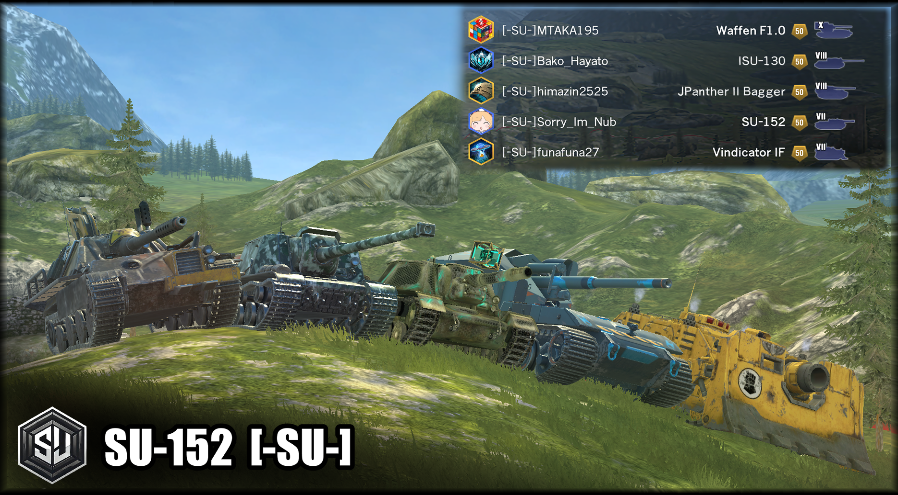

Use Smasher again? That's why you're nub LMAO ---by SU-152

~駆逐に狂いし者たち~
我々はSmasherのような，誰もが認める強戦車には興味がありません．駆逐戦車に乗り，そうしたOP車両を蹴散らすこと……これこそが我々の美学です．
-SU- クラン 募集要項
募集要項
- お気に入りのTier7以上の駆逐戦車(TD)があり，その戦車だけで以下を満たしていること：
- ランク50を達成している
- 月間WN8：2450以上
- 月間WN8アジア10位以内
- 月間勝率：60%以上
- 優等マーク：1優等以上(優等未実装Tierは不要)
- また，全体戦績として以下を満たしていること
- 月間勝率：60%以上
- 戦闘数：5000戦以上
- ※以下の項目により，条件を満たしていなくても加入が認められる場合があります．
- -SU-メンバーから推薦があった時
- ランク50を達成していないが，達成する見込みがある時
- 世紀末_wotbと交流があり，世紀末_wotbが「この人なら良いか」とやや偏った判断をした時
- 世紀末_wotbと交流があり，TBオフシーズン時のみ籍を置きたい等の一時的な加入である時
※あくまで条件は目安ですので，少しでも興味のある方はお気軽にご連絡ください．状況に応じて条件を緩和・免除する場合もございます．
福利厚生
-SU-クランメンバーは以下の恩恵を受けられます．
- -SU-メンバーとの個性的な小隊を楽しめる！ ※メンバーは皆勝率6割以上であるため，勝率が盛れます
- 別ゲー・受験などを理由とした休暇制度（無期限）
- 交流のあるクランへの転部サポート制度
- Discordにて，メンバーそれぞれに個性的なロールが付与
注意事項
- トーナメント参加やクランイベントは一切行っておりません．
- ウィークリークランミッションの達成率は低めです．クランミッション報酬には期待しないでください．
- ランク50はあくまで通過点として捉えてください．
- 無断加入申請には対応していません．→ 必ず事前に連絡をお願いします．
- SNSなどで迷惑行為・炎上行為が確認され，-SU-クランに風評被害が及んだ場合は除名処分となる場合があります
応募方法
以下のいずれかの方法で，ご自由にご応募ください．
X（旧Twitter）DMで応募
→ 世紀末_wotbのXアカウント にメッセージを送信
Discordで応募
→ 世紀末_wotbのDiscordサーバー に参加し，フレンド追加後，DMにてメッセージを送信
YouTubeで応募
→ 世紀末_wotbのYouTubeチャンネル の任意の動画や投稿のコメント欄にてメッセージを送信
主要メンバー紹介
|
Sorry_Im_Nub SU-152 クランマスター。ロリコン淫夢厨とメンバーに認知されている。 |
|
Bako_Hayato ISU-130 何故か鈍足車両が得意。SafetyZoneさんに「バカハヤト」と呼ばれた事が何よりうれしかったらしい。 |